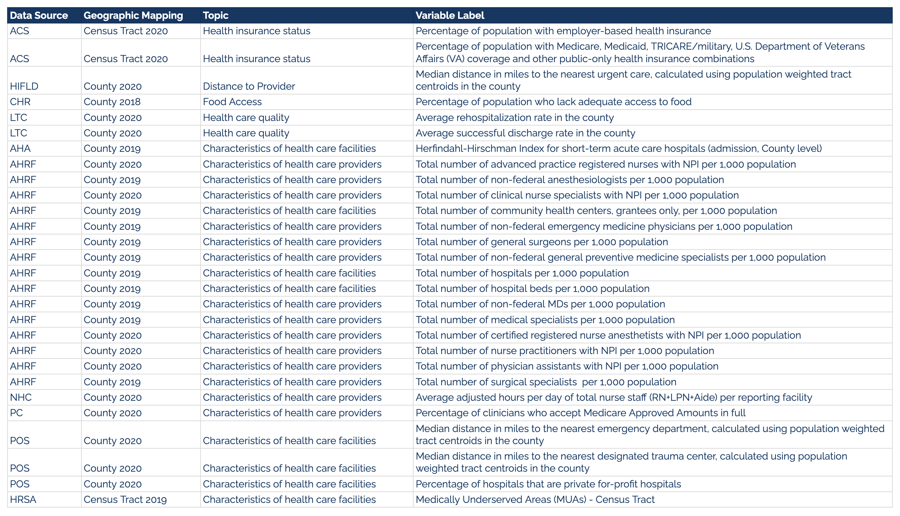

Datasets
Turquoise Health Dataset
Study's target value: Procedure Rate
Turquoise Health is a software company working to create price transparency for patients and employers. Their platform is building the future of simpler transactions in healthcare where prices have menu-like clarity at a fair market rate.
Turquoise Health's datasets are built using publicly available data disclosed by hospitals across the United States in compliance with the machine-readable file requirement of the CMS Hospital Price Transparency Regulation (45 CFR §180.50).
The visual below shows our study's dataset containing 14 shoppable services and their median cash and commerical rates. The data was obtained in the year 2022.
Learn more about Turquoise Health's Datasets
Geographic Dataset
Google Maps API
We geocoded each hospital provider's address by returning the Lat Long from Google Maps API and thus mapped our Census data at 4 levels: Census Divison, Census Region, State, and National. Learn more at Developers.Google.com
SDoH Dataset
Below are the datasets we used to create our SDoH variables. Each dataset is listed with a brief description and a link to the source.
CDC and Agency for Toxic Subtances and Disease Registry (CDC/ATSDR)
The CDC/ATSDR Social Vulnerability Index (CDC/ATSDR SVI) uses 16 U.S. census variables to help local officials identify communities that may need support before, during, or after disasters.Learn more at ATSDR.CDC.gov
CMS Cost Reports
Centers for Medicare & Medicaid Services (CMS) cost reports contain vital information on facility characteristics, utilization data, cost and charges by cost center, Medicare settlement data, and financial statement data. Learn more at CMS.gov
Census American Community Survey (ACS)
The ACS is an extensive annual survey conducted by the U.S. Census Bureau that provides critical insights into the social, economic, and demographic characteristics of the U.S. population. Learn more at Census.gov
American Hospital Association (AHA)
The Herfindahl-Hirschman Index (HHI) is a widely used measure of market concentration that reflects the degree of competition among hospitals within a specific geographic area. As a leading organization representing hospitals and healthcare networks, the AHA collects and compiles data from various sources, ensuring the HHI's accuracy and relevance. Learn more at AHAData.com
US Health Resources & Services Admin (HRSA)
Area Health Resource Files
AHRF compiles information from over 50 data sources, providing a wealth of data on health care professions, health facilities, population characteristics, economics, health professions training, hospital utilization, hospital expenditures, and the environment at county, state, and national levels. Learn more at Data.HRSA.gov
Homeland Infrastructure Foundation Level Data (HIFLD)
U.S. government-led initiative sponsored by the Department of Homeland Security (DHS) and the Department of Defense (DoD), with participation from various federal agencies, including the Department of Energy, Department of Transportation, and Department of Health and Human Services, among others. They provides access to a comprehensive set of geospatial data representing various infrastructure and assets within the United States. Learn more at HIFLD-Geoplatform.OpenData.Arcgis.com
LTC Hospital Performance Metric Reports
LTC Data is a private company that specializes in providing comprehensive and easy-to-use data reports for long-term care (LTC) providers. They obtain their data directly from the Centers for Medicare & Medicaid Services (CMS) claim reports, purchasing tens of millions of data records each quarter. Leveraging their proprietary software program, LTC Data processes and customizes these records into insightful reports tailored to the needs of LTC operators and clinicians. Learn more at LTCDataSolutions.com
Agency for Healthcare Research and Quality (AHRQ)
The 1996 MEPS Nursing Home Component (MEPS-NHC) is a panel survey sponsored by the Agency for Health Care Research and Quality (AHRQ). It focuses on nursing homes and individuals who were residents or admitted to nursing homes during the 1996 calendar year. The survey consists of three rounds of in-person interviews in order to provide estimates on healthcare and socioeconomic characteristics. The primary goal of the MEPS-NHC is to estimate the use of and expenses for nursing home services and other health care expenses for residents during their stay. Additional objectives include providing estimates on Learn more at AHRQ.gov
CMS Provider of Service Files
The Provider of Services (POS) Current Files are valuable data sources that offer insights into various healthcare facilities, including Clinical Laboratories (CLIA labs), hospitals, and other types of facilities. These files contain comprehensive information on facility characteristics, such as the name, address, and the types of Medicare services provided. The POS files are available for both Clinical Laboratories and Hospital & Non-Hospital Facilities. Learn more at CMS.gov
Feeding America
Map the Meal Gap; Food Security
Feeding America's annual Map the Meal Gap study, initiated in 2011, aims to enhance our understanding of food insecurity and food costs at the local level. The latest release presents 2020 estimates of food insecurity for the overall population and children across various geographic levels, such as counties, food bank service areas, congressional districts, and states. Learn more at FeedingAmerica.gov
US Health Resources & Services Admin
Medically Underserved Area Data
MUA Find is a tool that allows users to access data on Medically Underserved Areas (MUAs) and Medically Underserved Populations (MUPs) across the United States. MUAs and MUPs are designated by the Health Resources and Services Administration (HRSA) based on criteria such as the availability of healthcare providers, the health status of the population, and other factors that may affect access to healthcare services. Learn more at Data.HRSA.gov